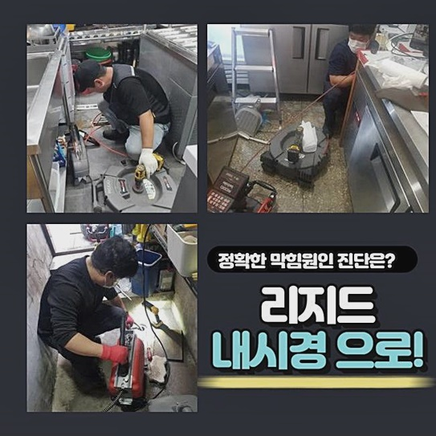
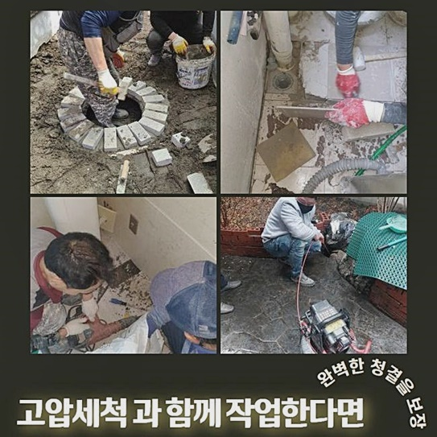
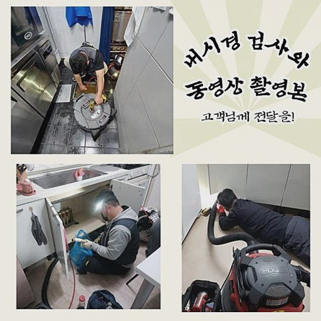
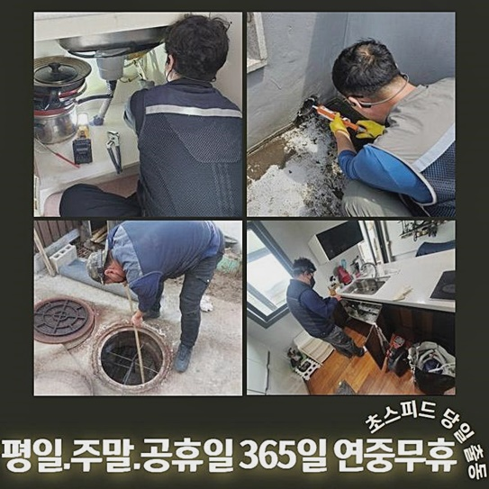
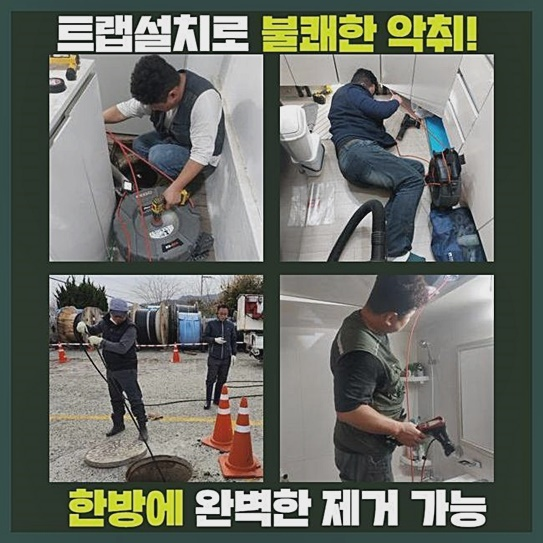

🏠 안산 안산동대변기뚫음 사이동 하수구뚫는곳 누수탐지공사
안산 변기막힘 전문 시공 후기

📋 작업 개요
- 위치: 안산
- 서비스 유형: 변기막힘, 하수구막힘, 배관막힘, 집수정막힘, 누수수리, 역류해결, 뚫는업체, 배관청소, 고압세척, 설비공사, 악취차단
- 작업 일시: 2024. 6. 18. 1:00
- 업체명: 하수구수사대 (010-5615-2118)
🔍 문제 상황
안산 안산동대변기뚫음 사이동 하수구뚫는곳 누수탐지공사
갑작스럽게 배수관에서 차단이 일어난 사안이 적게나마 존재했을 거라 예측합니다
일순간 집안의 배관이 넘쳐나는 일이 발생하여 배수관 뚫음을 이행해보신 증험 역시 간접적으로나마 있었을 가능성이 높은데요
파이프 내부로 찌꺼기들이 진입하게 되면 초기엔 무방하겠지만 계속적으로 적층된다면 물막힘이 일어나는 거예요
집 안에서 욕실사용이 안되면 생활의 문제가 늘게 된답니다
장애가 일어난 하수관을 고쳐내려고 나뭇가지 등도 삽입해보고 뚫어뻥액상도 부어봤는데 뚫어내지 못했다면 파이프 뚫음 전문가에게 신속하게 문의하여 수리받으실 것을 권해드립니다
섣부른 셀프수리는 도리어 상황을 안 좋게 만들 수 있다는 사실을 지나치시면 안돼요
본 글에서는 배관 세척업무와 연계된 상식과 더불어 막힘이 생긴 사태 때 올바르게 행동하는 방안을 안내드릴 것입니다
요번에 방문한 현장처럼 역류때문에 난해한 상태라면 한층 정밀한 조치가 요망돼요
해당 지점은 사무실 직원의 급한 전화연락을 받은 후 재빠르게 내방하였던 데입니다
제조설비 측면에 있는 관이 정체돼 직원들의 일에 문제가 생겼다고 토로하셨답니다
즉각 그 곳에 갔더니 시관로 설비가 깊이 매립되었고 막힘이 생긴 자리 역시 상당히 멀었어요 처치가 쉬이 이루어지지 않을 거라는 걸 예상하였어요
즉각 조치를 해야 했기 때문에 배관의 측면을 뚫어내기로 결정했죠

🔎 원인 분석
💡 전문가 진단: 정밀 진단 장비를 사용하여 슬러지의 고착 여부를 판명하고 타격/세척 작업을 실시했습니다.
물빠짐이 하나도 안되고 있으므로 내측을 관측하기 힘든 상황이었답니다
이에따라 온전한 사안 판정이 힘겹기에 내시경cctv를 통하여 내측을 확인해 보도록 합니다
파이프 안에 쓰레기들이 매우 많았어요 성분은 끈끈한 슬러지 뭉치였어요
건물관리자께서 세척 용액을 자주 넣어보았으나 차도는 목도할 수 없었다고 하십니다 배수시스템이 가동될 수 없게끔 노폐물 덩어리들이 차지하고 있는 모양새였어요
배관전용cctv 촬영모습을 종합해 보니 사각집수정에서부터 시관파이프까지 결부된 부근이 막혀버리는 바람에 물이 바깥으로 유출된 것이었어요
초기 예측과 차이나게 꽤 많은 지점이 단단해진 잔재들로 메워 있었답니다
여러 물건들을 취급하는 과정에서 발생한 기름때로 인한 잔재들이 상당해보였어요
관리자분께 가운데의 파이프를 절제하는 것이 조속한 처치를 위해 필요하다고 설명하고 차후 진행방안을 알려드린 다음 일을 시작했죠
업무 진행에 관한 재가를 받은 뒤 공장내부의 파이프에서부터 야외로 노출된 시관로에 이르기까지 뚫음을 시행했죠
노폐물의 양이 상당하였기에 일차적인 업무를 한 뒤엔 공장 내부로 이어진 배관도 적절한 공구류들을 써서 처리해 주어야 합니다
이 경우엔 고속분쇄용기기를 써주면 됩니다 이것은 머릿부분의 쇠사슬이 회전해나가며 관 내에 정착한 찌꺼기 일체를 파쇄하는 역할을 수행하고 있죠
간혹 의뢰자께서 고속으로 돌면서 관에 훼손이 일어나는 것은 아닌지 물어보시는 경우도 있으신데요
미숙한 능력을 토대로 주먹구구식으로 가동한다면 배관의 균열이 발현될 수 있겠지만 저희처럼 숙련성을 갖춘 이들에겐 합치되지 않는 다는 걸 안내드립니다
내시경cctv를 통해 안을 체크하면서 고착화가 심화된 곳과 인과관계를 파악한 다음에 본작업에 들어갑니다

🔧 작업 과정
생산시설에서 방출된 물에 노폐물들이 가득히 채워진 상황이었죠
플렉스샤프트 장비를 통해 찌꺼기를 파쇄하는 모습을 호기심있게 쳐다보시더니 개운한 마음이 든다고 표현하셨어요
조치하여야 하는 영역이 컸지만 타공지점을 중심으로 섬세하게 세척을 진행했어요
특정한 물건을 제조하는 공간에선 기름찌꺼기가 자주 토출되고 여러 변수로 인해 기름 배출이 될 수 있기 때문에 엄격한 시스템으로 운영된다고 해도 막힘을 포함한 여러 문제가 나타나는 것이죠
깔끔한 모습을 보시고는 차후 신경써서 사용해야 하겠다며 만족스러워 하셨답니다
해당 지점 전반으로 물을 못쓰는 모양새가 되버린 것은 공장의 바깥에 설비된 파이프에서 정체가 생겨나서였어요
배수시스템에서 차질을 빚는다면 근무자들에게까지 해를 끼칠 수 있어요 여러가지 잔재들이 겉으로도 보이는 수준으로 상당량 누증되어 있었어요
1년 정도는 세척관리를 하지 않았다고 말씀하셨어요
이에따라 배수구를 통해 여러가지의 유분이 더해졌다는 걸 알아내게 되었어요
공장의 설비가 노후되었기 때문에 배관 또한 낡게 되었을 가망이 높죠
이러한 사항도 막힘이 발생할 때 심각해질 수가 있으니 주의가 필요합니다
잔재들이 점층적으로 누적되면 물흐름을 막기 때문에 배수관에도 충격을 가하고 가뜩이나 얇아진 자리에선 파열이 생길 수가 있습니다
파이프 속의 쓰레기들을 플렉스샤프트를 통해서 충분하게 처치 가능했으므로 부가적인 고압세정은 이행할 필요가 없었어요
고속분쇄 과정을 바탕으로 슬러지들을 종합적으로 소멸시키는 수순을 실시하였어요
배수구청소가 평상시 안 되었다면 쉬이 막힘이 일어나고 역류증세가 나타날 수도 있죠
물이 올바르게 사라지지 않고 평소때와 차이나는 모습이 발현된다면 최대한 빠르게 관련업자에게 연락을 취하시는 것이 나아요
막힘이 일어난 지점은 다른곳에 비교해서 상황이 심중해질 가망이 높죠
재빠른 방문과 수리도 중요하지만 숙달된 전문인을 만나는 부분도 중요하죠
제반시설은 충분한지와 실력 등을 필수적으로 검토해보시길 바라요
충분한 경력과 제반설비 이 두가지를 충족한다면 복잡한 고장이 일어났더라도 감당할 수가 있어요
우리는 온전하게 시공이 실행되도록 최첨단 장비들을 이용하고 있어요
뚫음에 적합한 장비들을 활용하도록 플렉스샤프트와 고압청소 장비 일체를 갖추어 고객님의 처소로 이동합니다


✅ 작업 완료
슬러지들을 떠미는 방안으로 시공을 하고 내시경촬영기기를 삽입하여 안에 슬러지 덩어리들이 잔류하고 있지는 않은지 보고 청소를 이어나가고 있어요
이런 철저한 단계를 거쳐 통수공사를 해보시면 노폐물이 고착화되는 상황을 방지할 수 있기에 다시 막혀버리는 문제는 우려하지 않으셔도 돼요
보는 것처럼 각종 쓰레기 더미들이 남김없이 소멸되었답니다
막힘이나 역류가 나타나지 않았어도 예방적인 조처를 받아보시는 경우도 많아요
요청한 시간에 맞게 내방해 드리며 늦은 시간이라도 가능하니 고심하지 말고 문의 부탁합니다
내팽개치지 말고 변화가 목격되면 바로바로 해결해 나가실 것을 권장합니다


⚠️ 베란다 누수 및 방수 관리 방법
- ✅ 비가 많이 올 때 창틀 주변이나 아래층 천장에 얼룩이 생기는지 정기적으로 확인해 보세요.
- ✅ 우수관 주변 실리콘 마감이 들뜨거나 깨진 틈새가 있는지 손상 여부를 수시로 체크하세요.
- ✅ 베란다 바닥 타일의 줄눈(메지)이 소실되면 그 틈으로 물이 침투하여 누수가 유발됩니다.
- ✅ 누수 의심 증상 발견 시 방치하면 아래층 손실이 커지므로 즉시 전문가의 진단을 받으십시오.
💡 핵심 정리
- 확실한 장비 작업(내시경 점검 및 샤프트 스케일링)으로 원인을 뿌리 뽑습니다.
- 작업 후 1년 이내에 동일한 부위 재발 시 100% 무상 A/S 서비스를 보장합니다.
- 서울 · 경기 · 인천 전 지역에 24시간 언제든 긴급 출동할 수 있도록 항시 대기 중입니다.
❓ 자주 묻는 질문 (FAQ)
🚨 안산 변기막힘 문제로 고민이신가요?
정확한 원인 진단과 확실한 시공으로 재발 없는 해결을 약속드립니다.
24시간 긴급 출동 | 서울 · 경기 · 인천 전지역 | 1년 내 재발 시 무상 A/S